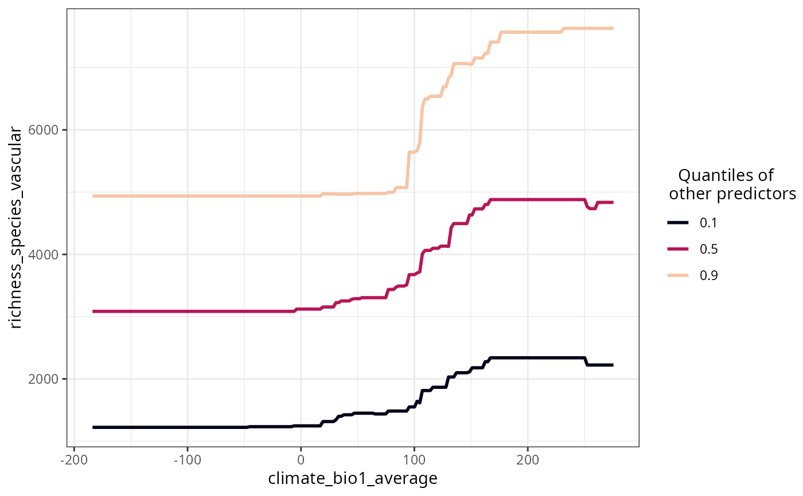
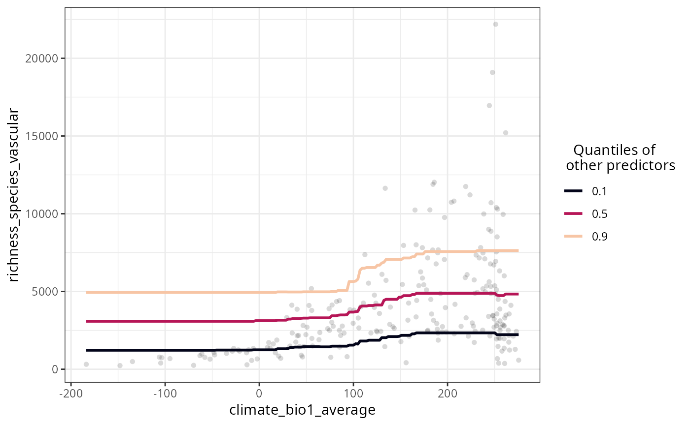

Plots the response curves of models fitted with rf(), rf_repeat(), or rf_spatial().
Arguments
- model
A model fitted with
rf(),rf_repeat(), orrf_spatial().- variables
Character vector, names of predictors to plot. If
NULL, the most important variables (importance higher than the median) inxare selected. Default:NULL.- quantiles
Numeric vector with values between 0 and 1, argument
probsof quantile. Quantiles to set the other variables to. Default:c(0.1, 0.5, 0.9)- grid.resolution
Integer between 20 and 500. Resolution of the plotted curve Default:
100- line.color
Character vector with colors, or function to generate colors for the lines representing
quantiles. Must have the same number of colors asquantilesare defined. Default:viridis::viridis(length(quantiles), option = "F", end = 0.9)- ncol
Integer, argument of wrap_plots. Defaults to the rounded squared root of the number of plots. Default:
2- show.data
Logical, if
TRUE, the observed data is plotted along with the response curves. Default:FALSE- verbose
Logical, if TRUE the plot is printed. Default:
TRUE
Details
All variables that are not plotted in a particular response curve are set to the values of their respective quantiles, and the response curve for each one of these quantiles is shown in the plot. When the input model was fitted with rf_repeat() with keep.models = TRUE, then the plot shows the median of all model runs, and each model run separately as a thinner line. The output list can be plotted all at once with patchwork::wrap_plots(p) or cowplot::plot_grid(plotlist = p), or one by one by extracting each plot from the list.
See also
Other visualization:
plot_evaluation(),
plot_importance(),
plot_moran(),
plot_optimization(),
plot_residuals_diagnostics(),
plot_response_surface(),
plot_training_df(),
plot_training_df_moran(),
plot_tuning()
Examples
data(plants_rf)
plot_response_curves(
model = plants_rf,
variables = "climate_bio1_average"
)

plot_response_curves(
model = plants_rf,
variables = "climate_bio1_average",
show.data = TRUE
)
